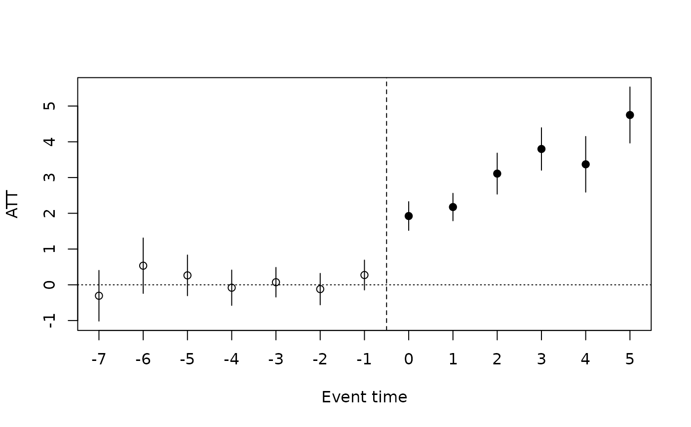
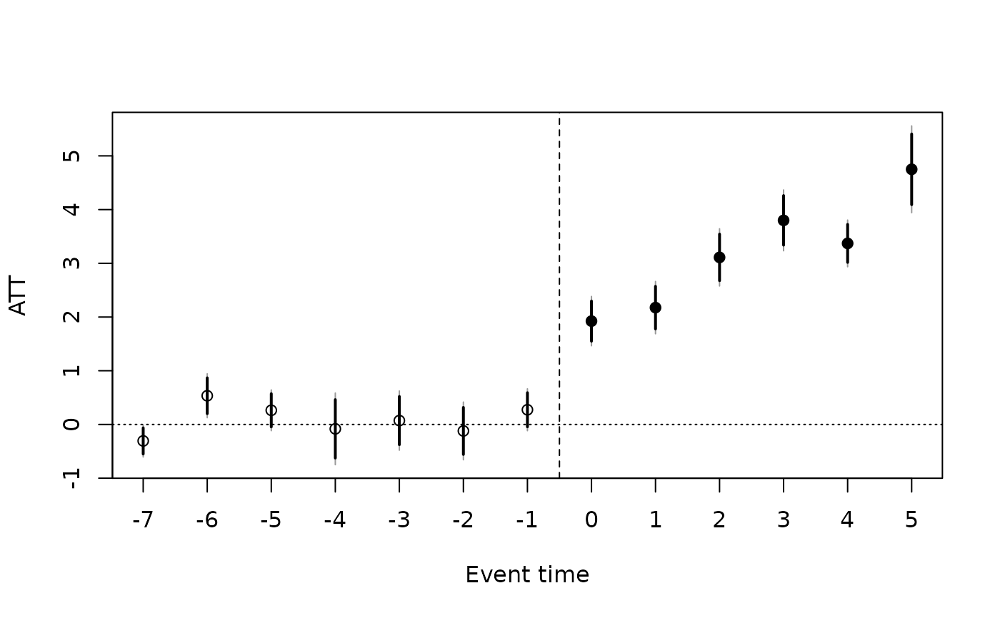

The Callaway and Sant'Anna (2021) estimator of the group-time average
treatment effects on the treated ATT(g, t): the effect at period t
for the cohort of individuals first treated at period g. Each
ATT(g, t) is a two-group, two-period comparison of the change in the
outcome between a base period and period t for cohort g against a
clean control group (never-treated individuals, or individuals not yet
treated by period t), so that already-treated individuals are never
used as controls. This avoids the negative weights of the two-way
fixed-effects regression of did() under staggered adoption with
heterogeneous effects. The ATT(g, t) are then aggregated into an
overall effect, an event study (effect by time since treatment), effects
by cohort or by calendar period with summary.panglm_attgt().
Arguments
- formula
outcome ~ 1, oroutcome ~ covariatesfor conditional parallel trends (covariates are taken in the base period)- data
a data.frame in long format
- index
c(individual, time); the time index must be numeric- treat
name of the column holding each individual's first treated period (in the units of the time index);
NA,0orInffor units that are never treated- control
comparison group:
"never"(never-treated individuals) or"notyet"(never treated or not yet treated, nor anticipating treatment, at both periods compared)- method
"dr"(doubly robust),"ipw"or"reg"; only matters with covariates- base
base period for pre-treatment
ATT(g, t):"varying"or"universal"- anticipation
number of periods before
gin which treatment can already affect the outcome (the base period moves back accordingly)- level
confidence level of the reported intervals
- weights
optional sampling weights: the name of a column of
dataor a numeric vector with one value per row ofdata. They must be non-negative and constant within each individual (rows with a missing weight are dropped). The weights enter the propensity score, the outcome regression and the means of everyATT(g, t), and the cohort shares used by the aggregations, asweightsnameindid::att_gt().- cluster
optional name of a column of
data(or a vector with one value per row) defining clusters of individuals, constant within each individual (for example the region of a province). Standard errors, the pre-trend test and the bootstrap are then clustered at that level instead of the individual level.- bstrap
logical: multiplier bootstrap standard errors (
FALSEby default: analytic standard errors)- cband
logical: uniform confidence bands from the bootstrap simultaneous critical value (implies
bstrap = TRUE)- biters
number of bootstrap draws
- multiplier
bootstrap multipliers:
"rademacher"(-1or1with equal probabilities, as in current versions ofdid) or"mammen"(the two-point distribution of Mammen 1993)- seed
optional integer seed for the bootstrap draws. When given, the draws are reproducible and the global random number generator is left as it was; otherwise a seed is drawn from it. Either way the seed is stored in the fit and reused by
summary.panglm_attgt().
Value
an object of class "panglm_attgt": a list with estimates (a
data frame with group, time, event (time - group), estimate,
se, lower, upper and post), inf (the matrix of influence
functions, one row per individual and one column per ATT(g, t)),
units (individual identifiers, cohorts, normalized weights and
clusters), pretrend (the Wald test of the pre-treatment ATT(g, t),
or NULL), n (individuals), groups, periods, boot (with the
bootstrap: the settings, the analytic standard errors se_analytic
and the simultaneous critical value crit; NULL otherwise) and the
settings. With cband = TRUE, estimates also has the uniform band
band_lower, band_upper. Methods: print, summary,
coef, vcov, nobs, plot, tidy and glance.
Estimators
With y ~ 1 (no covariates) every ATT(g, t) is the difference between
the mean outcome change of cohort g and that of the control group,
whatever method. With covariates, parallel trends is assumed to hold
conditionally on them; their values in the base period (the earlier of
the two periods compared) are used, and the comparison is made by
method = "dr": the doubly robust estimator of Sant'Anna and Zhao (2020): a logit propensity score for belonging to cohortgand a linear regression of the outcome change among controls; consistent if either model is correct;method = "ipw": normalized inverse probability weighting with the logit propensity score;method = "reg": outcome regression (the linear regression of the outcome change fitted on the controls, averaged over the treated).
Controls with a propensity score of 0.995 or more are trimmed, as in the
DRDID package. The panel is balanced first (individuals not observed in
every period are dropped), individuals already treated in the first
period are dropped, and cohorts first treated after the last period are
treated as never treated. When no individual is never treated, the last
cohort to be treated serves as the never-treated group and the periods
from its treatment date onwards are dropped (the convention of
did::att_gt()).
With base = "varying" (the default) pre-treatment ATT(g, t) compare
period t with period t - 1, which gives placebo estimates of the
change in trends; with base = "universal" every ATT(g, t) is
measured against the last period before treatment, g - 1 - anticipation,
whose own ATT is zero. Post-treatment effects are the same either way.
Inference
Standard errors are analytic and come from the influence function of
each estimator, including the estimation of the propensity score and
outcome regression and, for the aggregations, of the cohort shares used
as weights; they are robust to serial correlation within individuals.
They match did::att_gt(bstrap = FALSE) and did::aggte(). With
cluster, the influence functions are summed within clusters (which must
nest individuals) before computing the standard errors, as
clustervars in did. The joint Wald test of all pre-treatment
ATT(g, t) is reported as a test of parallel pre-trends.
With bstrap = TRUE, the standard errors come instead from the
multiplier bootstrap of did: each bootstrap draw multiplies the
(cluster sums of the) influence functions by independent Rademacher or
Mammen weights, and the standard error is the interquartile range of the
draws divided by that of the standard normal, which is robust to a few
extreme draws. With cband = TRUE the bootstrap also gives the
simultaneous critical value, the level quantile of the largest
studentized deviation across all ATT(g, t) (or all levels of an
aggregation), and the uniform confidence bands band_lower,
band_upper cover all effects jointly with probability level. The
aggregations of summary.panglm_attgt() reuse the same multiplier draws
(they are generated from seed), so that they are coherent with the
ATT(g, t). Pointwise intervals (lower, upper) use the normal
critical value with the bootstrap standard errors.
Validation
Checked against did::att_gt() and did::aggte() on did::mpdta in the
package's validation suite on GitHub: ATT(g, t), analytic and clustered
standard errors, the pre-trend test and the four aggregations, for the
"dr", "ipw" and "reg" estimators, both control groups, both base
periods, sampling weights, anticipation and unbalanced panels; the
multiplier bootstrap standard errors and uniform bands against those of did
with the same number of draws.
References
Callaway, B. and Sant'Anna, P. H. C. (2021). Difference-in-differences with multiple time periods. Journal of Econometrics, 225, 200-230. doi:10.1016/j.jeconom.2020.12.001
Sant'Anna, P. H. C. and Zhao, J. (2020). Doubly robust difference-in-differences estimators. Journal of Econometrics, 219, 101-122. doi:10.1016/j.jeconom.2020.06.003
Mammen, E. (1993). Bootstrap and wild bootstrap for high dimensional linear models. The Annals of Statistics, 21, 255-285. doi:10.1214/aos/1176349025
See also
summary.panglm_attgt() for the aggregations, etwfe() for
the extended two-way fixed-effects alternative (also for count and
binary outcomes), did() and eventstudy() for the TWFE versions.
Other policy evaluation:
did(),
etwfe(),
eventstudy()
Examples
# A health insurance scheme (for example the AMO extension in Morocco)
# is rolled out region by region: provinces of region A join in 2016,
# region B in 2018, region C in 2020, and region D not before 2022.
# Outcome: outpatient visits per 1,000 inhabitants.
set.seed(1)
d <- expand.grid(province = 1:120, year = 2012:2021)
region <- rep(c(2016, 2018, 2020, NA), each = 30)
d$adoption <- region[d$province]
d$urban <- rep(runif(120), 10)[d$province]
a <- rnorm(120)
e <- d$year - d$adoption
d$visits <- 50 + 5 * a[d$province] + 0.5 * (d$year - 2012) * (1 + d$urban) +
ifelse(!is.na(e) & e >= 0, 2 + 0.5 * e, 0) + rnorm(nrow(d))
fit <- attgt(visits ~ 1, data = d, index = c("province", "year"),
treat = "adoption")
fit
#>
#> Group-time average treatment effects (Callaway and Sant'Anna 2021)
#> Control group: never treated Estimator: unconditional Base period: varying
#> Individuals: 120 Periods: 10 Cohorts: 2016, 2018, 2020
#>
#> group time event estimate se lower upper
#> 2016 2013 -3 0.04980 0.3667 -0.6689 0.7685
#> 2016 2014 -2 -0.20624 0.3555 -0.9030 0.4905
#> 2016 2015 -1 0.51057 0.3562 -0.1876 1.2087
#> 2016 2016 0 1.46657 0.3465 0.7874 2.1458
#> 2016 2017 1 1.91160 0.3555 1.2148 2.6084
#> 2016 2018 2 3.06639 0.3778 2.3260 3.8068
#> 2016 2019 3 3.65595 0.3545 2.9611 4.3508
#> 2016 2020 4 3.37037 0.3969 2.5924 4.1484
#> 2016 2021 5 4.74969 0.3996 3.9665 5.5329
#> 2018 2013 -5 0.13987 0.3942 -0.6327 0.9124
#> 2018 2014 -4 0.33442 0.3838 -0.4178 1.0866
#> 2018 2015 -3 0.40285 0.3571 -0.2971 1.1028
#> 2018 2016 -2 -0.56983 0.3979 -1.3497 0.2100
#> 2018 2017 -1 0.07017 0.3971 -0.7080 0.8484
#> 2018 2018 0 2.47584 0.3390 1.8113 3.1403
#> 2018 2019 1 2.64339 0.4468 1.7676 3.5192
#> 2018 2020 2 3.15397 0.4152 2.3402 3.9678
#> 2018 2021 3 3.94272 0.4166 3.1263 4.7592
#> 2020 2013 -7 -0.30628 0.3614 -1.0147 0.4021
#> 2020 2014 -6 0.53454 0.3951 -0.2398 1.3089
#> 2020 2015 -5 0.38756 0.3811 -0.3593 1.1344
#> 2020 2016 -4 -0.49767 0.3251 -1.1349 0.1396
#> 2020 2017 -3 -0.23621 0.3614 -0.9445 0.4720
#> 2020 2018 -2 0.41508 0.4280 -0.4237 1.2539
#> 2020 2019 -1 0.24006 0.3168 -0.3809 0.8610
#> 2020 2020 0 1.82935 0.3836 1.0776 2.5811
#> 2020 2021 1 1.97049 0.2993 1.3839 2.5570
#>
#> Pre-trend test: Chi-squared = 17.36, df = 15, p-value = 0.2978
#> Use summary(x, type = ...) for the simple, dynamic, group or calendar aggregation.
#>
summary(fit) # overall ATT
#>
#> Callaway and Sant'Anna group-time ATT, aggregated overall (simple weighted average)
#> Control group: never treated Estimator: unconditional Individuals: 120
#>
#> ATT: 2.853 (SE 0.2018, 95% CI 2.458 to 3.248)
#>
#> Pre-trend test (pre-treatment ATT(g, t) = 0): Chi-squared = 17.36, df = 15, p-value = 0.2978
#>
summary(fit, type = "dynamic") # event study
#>
#> Callaway and Sant'Anna group-time ATT, aggregated event study (by time since treatment)
#> Control group: never treated Estimator: unconditional Individuals: 120
#>
#> ATT (mean of e >= 0): 3.188 (SE 0.2282, 95% CI 2.741 to 3.635)
#>
#> event estimate se lower upper
#> -7 -0.30628 0.3614 -1.0147 0.4021
#> -6 0.53454 0.3951 -0.2398 1.3089
#> -5 0.26372 0.2901 -0.3049 0.8323
#> -4 -0.08162 0.2521 -0.5756 0.4124
#> -3 0.07214 0.2109 -0.3412 0.4855
#> -2 -0.12033 0.2242 -0.5597 0.3190
#> -1 0.27360 0.2129 -0.1437 0.6909
#> 0 1.92392 0.2049 1.5223 2.3256
#> 1 2.17516 0.1956 1.7918 2.5585
#> 2 3.11018 0.2923 2.5373 3.6830
#> 3 3.79934 0.3027 3.2060 4.3927
#> 4 3.37037 0.3969 2.5924 4.1484
#> 5 4.74969 0.3996 3.9665 5.5329
#>
#> Pre-trend test (pre-treatment ATT(g, t) = 0): Chi-squared = 17.36, df = 15, p-value = 0.2978
#>
summary(fit, type = "group")
#>
#> Callaway and Sant'Anna group-time ATT, aggregated by treatment cohort
#> Control group: never treated Estimator: unconditional Individuals: 120
#>
#> ATT (cohort-size weighted): 2.664 (SE 0.1918, 95% CI 2.288 to 3.039)
#>
#> group estimate se lower upper
#> 2016 3.037 0.2875 2.473 3.600
#> 2018 3.054 0.3343 2.399 3.709
#> 2020 1.900 0.2999 1.312 2.488
#>
#> Pre-trend test (pre-treatment ATT(g, t) = 0): Chi-squared = 17.36, df = 15, p-value = 0.2978
#>
plot(fit)

# conditional parallel trends (trends differ by urbanization)
fitx <- attgt(visits ~ urban, data = d, index = c("province", "year"),
treat = "adoption", control = "notyet", method = "dr")
summary(fitx, type = "dynamic")
#>
#> Callaway and Sant'Anna group-time ATT, aggregated event study (by time since treatment)
#> Control group: not yet treated Estimator: DR Individuals: 120
#>
#> ATT (mean of e >= 0): 3.226 (SE 0.1746, 95% CI 2.884 to 3.569)
#>
#> event estimate se lower upper
#> -7 -0.369291 0.2944 -0.9463 0.2077
#> -6 0.492471 0.3390 -0.1719 1.1569
#> -5 0.153830 0.2463 -0.3290 0.6366
#> -4 0.006396 0.2183 -0.4214 0.4342
#> -3 -0.020909 0.1885 -0.3903 0.3485
#> -2 -0.129620 0.2215 -0.5638 0.3046
#> -1 0.224753 0.1905 -0.1487 0.5982
#> 0 1.974815 0.1797 1.6226 2.3270
#> 1 2.206638 0.1933 1.8278 2.5855
#> 2 3.196001 0.2521 2.7020 3.6900
#> 3 3.826915 0.2391 3.3583 4.2955
#> 4 3.382490 0.3564 2.6839 4.0811
#> 5 4.770903 0.3268 4.1303 5.4115
#>
#> Pre-trend test (pre-treatment ATT(g, t) = 0): Chi-squared = 18.1, df = 15, p-value = 0.2575
#>
# multiplier bootstrap, clustered by region, with uniform bands
d$region <- ceiling(d$province / 10)
fitb <- attgt(visits ~ 1, data = d, index = c("province", "year"),
treat = "adoption", cluster = "region", cband = TRUE,
biters = 499, seed = 1)
#> Warning: the simultaneous critical value is very large (7.62) and may be unreliable
plot(fitb)
